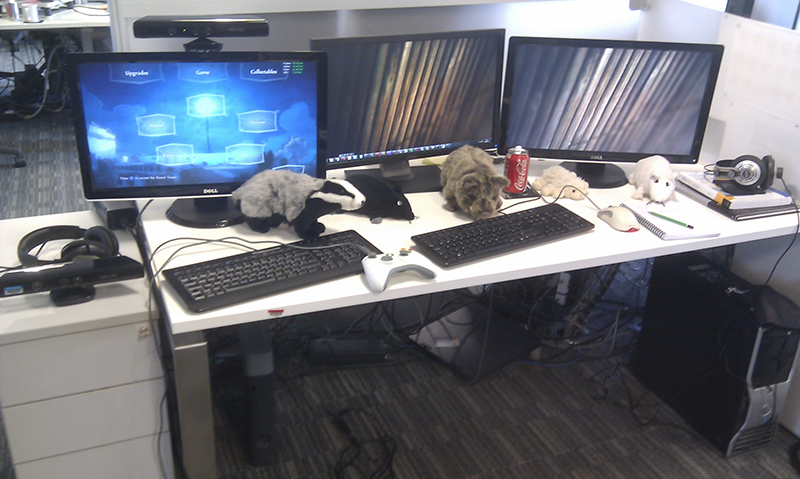

Mon blog AAA – épisode 2
Cela fait maintenant sept mois que j'ai publié le premier épisode de cette chronique qui était censée être mensuelle. La ponctualité rédactionnelle n'a jamais été le grand point fort des Forges (et surtout pas les articles avec mon nom dessus) et j’espère que vous m'excuserez du délai. Au moins, je ne devrai pas avoir trop de mal à faire plus vite pour le prochain épisode.
Aujourd'hui je vais essayer de présenter un peu l'organisation du quotidien, les gens et les méthodes de travail chez Lionhead.
Comme le prétendent les légendes et les making-of de jeux, l'ambiance dans un studio de développement est très détendue et agréable à vivre. La plupart des gens ont toujours le mot pour rire même en période de crise (dans les limites de l'humour anglais), le dress code est inexistant et il y a parfois des bières dans les frigo pour les grandes occasions. Les horaires de travail sont pensés pour des gens normaux (10h00 – 18h00) et sont flexibles dans la limite du raisonnable. En plus de ça, vu que Lionhead appartient à Microsoft les employés bénéficient de plein d'avantages très appréciables, comme par exemple les jeux Xbox Live Arcade gratuits.
Évidemment, tout cela ne marche que parce que l'entreprise fait confiance à ses employés (et elle a bien raison). En contre partie de la Dolce Vita et du boulot en short, les gens sont vraiment motivés par leur travail et il est courant de faire des heures sup', par intérêt ou parce que c'est un peu la crise (mais rien de scandaleux comme on peut parfois le lire dans la presse). En bref, la qualité de vie est bien là et c'est chouette de faire partie d'une entreprise qui prend un peu soin de ses employés, ne serait-ce qu'à coup de goodies et de barbecues.
Tout cela se retrouve aussi dans le travail. Je n'avais jamais été aussi bien installé en tant que stagiaire. On m'a fourni un vrai bureau (pas caché dans un coin de l'open space), un PC avec des specs de la NASA ou presque, trois écrans HD et deux kits de développements Xbox 360. Les peluches ne sont par contre pas fournies par Lionhead mais je peux vous dire que j'étais loin d'avoir le bureau le plus décoré (surtout quand on se promène du côté des artistes et des level designers).

Côtés outils, il y a évidemment toute une batterie de logiciels Microsoft (Visual Studio pour programmer, Outlook pour les mails et le calendrier, Lync pour les discussions instantanées, etc.) et ils fonctionnent étonnamment bien les uns avec les autres. En plus de ça, plusieurs outils sont utilisés pour le travail en équipe et la gestion de projets :
- Perforce est un système de gestion de versions dont je suis tombé amoureux, il combine un peu le meilleur de SVN (que j'utilise pour mes projets personnels) et Git.
- Product Studio est utilisé pour recenser les bugs, récapituler le travail restant et permettre aux producteurs de faire plein de diagrammes (accompagnés de lolcats) pour savoir si le projet est en avance ou en retard.
Je vais d'ailleurs en profiter pour glisser deux mots sur le métier de producteur car je n'avais pas une idée très précise de ce métier avant d'arriver chez Lionhead (je voyais ça un peu comme un mec en maillot de bain au bord d'une piscine qui boit des cocktails avec des petits parasols dedans et qui, une fois de temps en temps, décroche son téléphone pour décaler la date de sortie du jeu ou signer un gros chèque). En fait ils remplissent des rôles indispensables. Ils travaillent avec les prestataires externes, ils définissent les priorités de l'équipe et répartissent le travail. C'est particulièrement important en fin de projet quand on sait qu'on aura pas le temps de faire tous les changements et itérations que l'on aimerait : ce sont eux qui jaugent ce qui est le plus important pour la qualité du produit fini (si on demandait à un codeur ce serait de corriger des baisses de framerates, pour un graphiste ce serait de changer telle ou telle texture, et pour un designer ce serait de rajouter des sorts dans le système de combat, etc.). Quand les testeurs relèvent des bugs (plusieurs dizaines de fois par jour), ils atterrissent en premier lieu chez les producteurs qui leur assignent un priorité et déterminent qui est à même de les corriger (bien sur parfois ils se plantent un peu). Enfin, ils prennent soin de tout ce qui est gestion de projet : ils fixent le calendrier, le planning, les objectifs et la date de sortie (en accord avec les gens du marketing) et s'efforcent de les faire respecter ; c'est comme ça que je me suis retrouvé à travailler sur Fable: The Journey qui avait besoin de main d’œuvre supplémentaire pour tenir ses délais.
Je ne me lancerai pas dans des descriptions des autres métiers clés du jeu-vidéo, je suppose que si vous lisez les Forges vous avez déjà une vague idée de ce que font un programmeur, un animateur ou un testeur.
Même avec tous ces beaux outils d'organisation, le plus important c'est quand même d'aller parler avec les gens – c'est encore ce qu'il y a de plus pratique dans bien des cas. C'est moins galère que de taper un mail ou de faire rebondir un bug aux quatre coins du studio et le plus souvent les gens sont contents d'avoir de la visite à leur bureau (en tout cas, moi, je suis toujours content d'en avoir). En plus ça permet de faire un peu connaissance et de se rincer l’œil sur le chemin car il y a toujours des trucs incroyables sur les écrans des graphistes.
C'est d'ailleurs un bon entraînement contre la timidité que d'aller à la rencontre d'un programmeur qui a bossé sur plein de jeux auxquels vous jouiez quand vous aviez 10 ans pour lui poser une question technique. A cette occasion, j'ai découvert le syndrome de l'imposteur (et j'ai aussi découvert qu'il avait un nom) : il s'agit de ce détestable sentiment (infondé) que vous n'avez rien à faire là et que vous n'avez pas du tout les qualifications nécessaires pour faire votre travail (dans mon cas, ça donne : « Oh la la ! Tous les programmeurs sont super balaises, qu'est ce que je fais là moi ? »). Un rapide tour sur Google ne donne pas beaucoup de crédit scientifique à ce syndrome, mais je me suis assez bien reconnu dedans, attendez-vous à y faire face si vous mettez les pieds dans un studio AAA. J'ai fini par m'en débarrasser à force de voir mon code passer les code reviews (votre code est relu par un collègue pour être sûr qu'il n'y a pas un gros bug bien flagrant dedans) sans trop d'accrocs.
Entre les outils logiciels et les gens sympathiques, les informations circulent plutôt bien dans le studio et j'ai été agréablement surpris par la brièveté et la (relative) rareté des réunions. En six mois, je ne me suis jamais retrouvé prisonnier d'un .ppt casse-pied ou d'une réunion sans intérêt pour moi. Les discussions sont tournées autour de la résolution de problèmes et de la prise de décisions, on sent bien que personne n'a envie de perdre son temps.
Je pense avoir donné les grandes lignes de l'organisation du studio et de son ambiance telle que je l'ai perçue. Il manque quelques informations qui auraient été intéressantes à partager mais je ne tiens pas à trop faire le malin avec mon NDA (Non Disclosure Agreement), n'hésitez pas pour autant à poser des questions ou laisser vos commentaires, je ferai de mon mieux pour y répondre. Le prochain article parlera plus en détail du travail que j'ai effectué sur Fable: The Journey et un peu de technique (mais pas trop, on est pas sur developpez.com non plus).
Réponses aux questions
Merci pour vos commentaires sur le précédent article. Je me permets de répondre ici aux questions que j'y ai trouvées pour que tout le monde en profite.
Quelles études as-tu faites? (Tipyx)
J'ai passé un Baccalauréat S puis je suis allé en CPGE au Lycée Fénelon. Au bout de deux ans, j'ai passé les concours d'écoles d'ingénieurs et je suis rentré à l'École Centrale de Nantes (trois ans de formation) dont je suis tout juste diplômé. L'ensemble n'est pas très pratique pour se vendre à l'étranger où les formations de qualité se font toujours en université (du coup, ça leur semble pas terrible alors qu'ici c'est plutôt prestigieux).
Pour les stages au niveau du métier, sont-ils indépendants du cursus que tu suis ? (plink)
Pas vraiment. D'une part les entreprises n'auraient aucune envie de prendre en stage un individu qui n'a pas de qualifications pour les aider dans leur travail. D'autre part, s'il s'agit d'un stage obligatoire, je doute que beaucoup d'écoles/universités laissent leurs élèves partir faire n'importe quoi. A Centrale Nantes, j'ai toujours eu à relier mes stages au métier d'ingénieur.
Quelles sont tes qualifications (en gros, quel(s) langage(s) maîtrises-tu ou faut-il maîtriser ?) (Tipyx)
Mes qualifications détaillées sont sur mon portfolio mais je pense que le plus important pour trouver un stage/emploi de programmeur dans le jeu-vidéo c'est de maîtriser le C++, un langage plus haut-niveau (genre Java ou C#) et un langage de script (Lua et Python sont les plus recherchés). L'industrie n'a pas l'air de trop aimer les bricoleurs et je pense qu'il est aussi important d'avoir de solides notions théoriques (algorithmique, compilation, etc.) ainsi qu'une bonne culture informatique.
Comment as-tu été pris (mon ambition à moi c'est de pouvoir effectuer mes stages à Monréal chez Bioware), qu'est-ce qui a été déterminant dans tes compétences ? (BrutalBabylon)
Chez Lionhead (et dans plusieurs autres studios) il y a des programmes dédiés (pas cette année on dirait) mais le plus souvent il faut envoyer un mail de candidature spontanée. Je pense que ce qui a été le plus déterminant dans mes compétences, c'est d'avoir déjà bossé dans un autre studio (2 mois dans un petit studio Nantais), d'avoir des projets finis et présentables (merci Ludum Dare !) et d'être intéressé par des domaines pas très populaires auprès des programmeurs (les interfaces graphiques et les outils).
Ajouter un commentaire
Commentaires

C'est super intéressant, et du coup ça doit être une merveilleuse expérience !

Ben dans la mesure où sous Git tu choisis aussi quels fichiers tu commit et quels fichiers tu gardes pour toi, je pense que tu peux aussi faire ce que tu racontes. Après la philosophie si tu bosses en parallèle sur différentes features, c'est je pense d'y travailler sur des branches différentes (que tu gardes en local chez toi). Stasher c'est aussi assez pratique, et derrière ça utilise des branches sans te le dire et avec un peu de magie noire (l'usage typique c'est de stasher tes modif courante avant de puller les modifs distantes, puis de merger le tout proprement chez toi). Mais je suppose que tu peux l'utiliser comme tu veux.
Bref, je suis plus ou moins habitué à Git donc je n'ai pas tous les problèmes que raconte le M. dont tu parles (post que je connaissais déjà au passage). Mais je suis quand même assez d'accord avec ce qu'il dit, dans le sens où Git est aussi axé gros barbus sous Linux (la doc' pourrait gagner en clarté quoi).
Si Perforce fonctionne sous Linux et dispose d'un plan gratuit, j'y jetterai peut-être un œil quand j'aurai du temps, ça peut toujours être intéressant.
À+ ! TLN

Ahoy.
Pour moi le gros avantage de Perforce sur SVN c'est la possibilité de séparer différentes modifications en plusieurs changelists. Il est possible de bosser sur plusieurs features différentes et des les commit séparément ou des les shelver (je crois que sous git on dirait stash). C'est aussi plus stable que SVN, j'ai jamais réussi à pourrir ma working copy sous Perforce.
L'avantage sur Git c'est que c'est beaucoup moins cryptique et orienté utilisateur (et non administrateur de dépôt). A vrai dire je n'aime pas vraiment git pour plein de raisons dont ce monsieur parle mieux que moi.
Le client (y compris la version graphique) est compatible Windows, Mac OS et Linux. Pour le serveur je ne sais pas.
A Centrale je leur ai vendu ça comme des gros projets d'informatique à la pointe de la technologie, ce qui n'est pas complètement faux. Ils ne m'ont jamais embêté avec ça.
Coucou Fil.
Tu peux détailler viteuf les avantages de Perforce par rapport à Git ou SVN ? Est-ce que ça marche aussi sous Linux ? (Ca m'étonnerait mais bon …).
Ah et autre question : tu le vends comment le fait d'aller stager dans le JV auprès des gens de Centrale ? Enfin en gros comment tu lies ça au métier d'ingénieur quoi.
- TLN, qui a la flemme de se faire un compte *
@Typix > Je ne recommanderai jamais assez le Ludum Dare. Si tu as déjà des projets finis c'est sans doute moins une nécessité mais ça reste intéressant (et rigolo) à faire.
L'AS3 peut servir sur le CV (en tout cas moi il m'a servi) mais il ne compte pas trop comme langage haut-niveau. Je pense que le C#/Java sont importants parce qu'ils sont souvent utilisés pour développer des outils (ce que personne n'oserait faire en AS3). J'ai croisé des offres de jobs qui citaient Unity récemment, je pense que c'est un très bon choix et en plus ça permet d'avoir des jeux un peu classes sur son CV.
@Zoneur > Merci !

Article intéressant ! J'attends avec impatience celui sur la partie technique, histoire de voir qu'est-ce qu'on attend d'un stagiaire dans un tel studio :)

Merci de m'avoir répondu ! Tu me conseilles donc de participer au Ludum Dare ? J'ai pas mal de petits projets finis et présentables pour ma part (je suis dév de jeux Flash :)). Mais niveau technique, je n'ai que l'AS3 (langage haut niveau ou script ? Ah ah :p), je comptais me mettre au C# pour l'Unity :). Des conseils, grand manitou :)
Sinon bon courage pour la suite !!!
P.S. : J'aime ton bureau :p